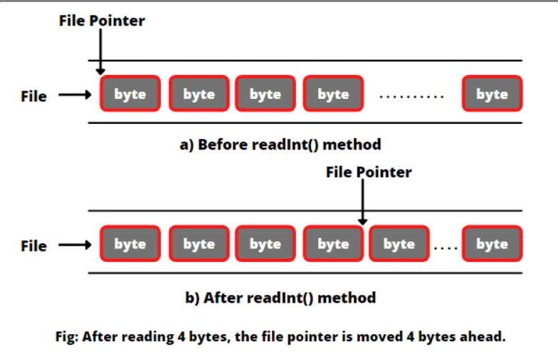

Acceso aleatorio a ficheros
Todos los flujos de E/S que hemos usado hasta ahora se conocen como flujos de solo lectura o solo escritura. Estos flujos se denominan flujos secuenciales en Java.
Un fichero que se lee o escribe mediante un flujo secuencial se denomina fichero de acceso secuencial. Los datos de un fichero de acceso secuencial NO se pueden actualizar.
Por lo tanto, para leer y escribir datos simultáneamente, Java proporciona la clase RandomAccessFile. Con esta clase, podemos leer y escribir datos en cualquier ubicación del fichero. Los archivos de acceso aleatorio son útiles para muchas aplicaciones diferentes.
Puntero de la clase RandomAccessFile
Un fichero de acceso aleatorio consta de una secuencia de bytes. Éstos, admiten un puntero especial conocido como puntero de fichero (file pointer). El puntero indica la posición actual (ubicación) en el fichero.
Se coloca en uno de estos bytes en el fichero y se puede mover a cualquier posición arbitraria antes de leer o escribir.
En otras palabras, se lleva a cabo una operación de lectura o escritura en la ubicación del puntero.
El puntero se puede mover utilizando el método seek().
Cuando se crea un fichero por primera vez, el puntero se establece en 0, lo que indica el comienzo del archivo. Cuando leemos o escribimos datos en el archivo usando métodos de lectura o escritura, el puntero del archivo avanza al siguiente elemento de datos (es decir, el siguiente byte).
Por ejemplo, si leemos un valor int usando el método readInt() del archivo, JVM lee 4 bytes usando el puntero, y ahora el puntero del archivo está 4 bytes por delante de la posición anterior, como se muestra en la figura a continuación.

RandomAccessFile raf = ....
raf.seek(position); //mueve el puntero a una posición
raf.seek(0); //mueve el puntero al inicio del fichero
raf.seek(raf.length()); //mueve el puntero al final del fichero
Constructor de la clase RandomAccessFile
Para construir un objeto de la clase tenemos que especificar el modo (mode) que determina qué tipo de acceso a ficheros está permitido.
- r: el fichero es de solo lectura.
- rw: se abre en modo lectura-escritura.
- rws: se abre para lectura y escritura y cada cambio en los datos del fichero se escribirá inmediatamente en el dispositivo físico.
RandomAccessFile raf = new RandomAccessFile("myfile.dat", "rw");
Ejemplo de un programa que añade texto al final de un fichero
public static void main(String[] args) {
RandomAccessFile file = null;
try {
file = new RandomAccessFile("file.txt", "rw");
file.seek(file.length()); // Moving file pointer to the end.
file.writeBytes("\nJava"); // Append text.
file.close();
} catch (IOException e) {
throw new RuntimeException(e);
}
}